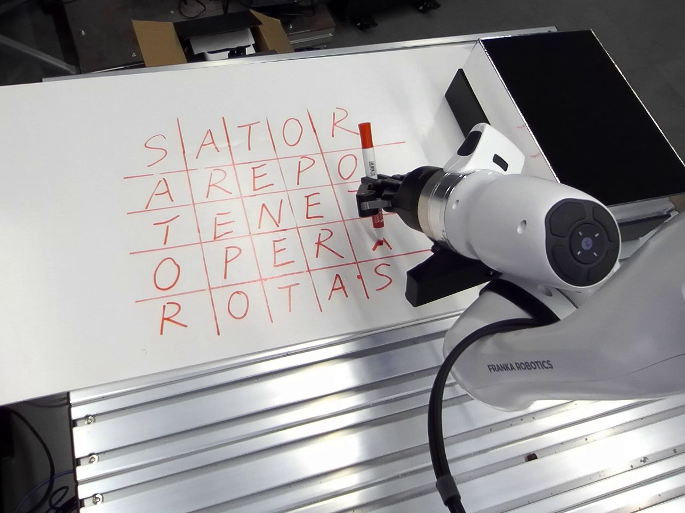

Task intent
What outcome should be achieved?
A Continual Embodiment Harness for Direct VLM Control
A general VLM may understand the task while remaining unaware of how a particular robot's motion and functional parts produce the intended effect. KnowBody makes those relations explicit, queryable, and revisable.
1Nanjing University 2Ant Group 3Zhejiang University

The missing interface
KnowBody gives a frozen VLM a shared reference for choosing concrete actions and learning from what those actions actually do.
What outcome should be achieved?
Where should the end effector move?
Which functional part acts on the world?
Initialize once. One off-task trajectory supplies the supported body relations that future decisions can query and test.
Method
The body model is not a second policy. It supplies action-relevant relations; the VLM remains responsible for task reasoning and action selection.
Tap the figure to enlarge
Actions, observations, and execution receipts remain traceable.
Partial relations expose support, source, and uncertainty.
Scene, progress, and attachment update within the episode.
Conditional effects are rechecked when their body assumptions change.
What the body model answers
Motion responseHow does commanded movement appear in the current view?
Functional geometryWhich held part produces the task effect?
Whole-body feasibilityCan the full arm reach the target along a valid path?
Real-robot evaluation
Four tasks, four trials per method and task, fixed reasoning budgets. Cross-episode updates are disabled for this matched comparison.
KnowBody
75% 12 / 16 completedNative harness
25% 4 / 16 completedRobot demonstrations
Video panels are reserved for the final release. Their proportions and labels are already ready for direct MP4 replacement.
Duck into a paper box
Apple onto a paper region
A digit with a held marker
Between two bottles
Abstract
A general-purpose vision–language model can understand a task goal without knowing how a particular robot's motion and functional parts produce the intended effect. We introduce KnowBody, a harness that makes these action-relevant body relations explicit, queryable, and revisable while keeping the model weights frozen. Initialized from one off-task trajectory, a partial body model guides action selection and the interpretation of past interactions. New evidence refines the model, and knowledge dependent on revised body estimates is rechecked before reuse.